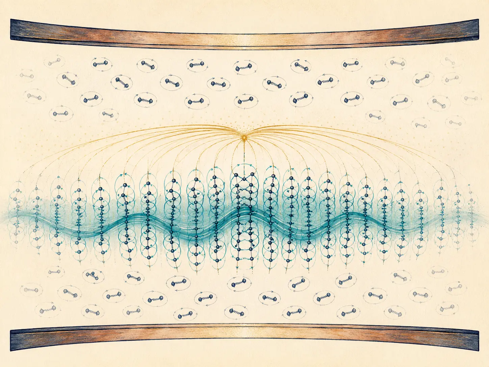
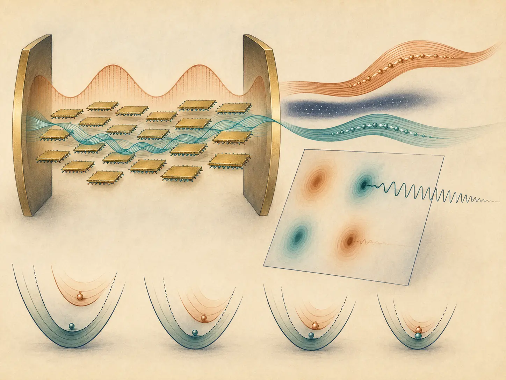
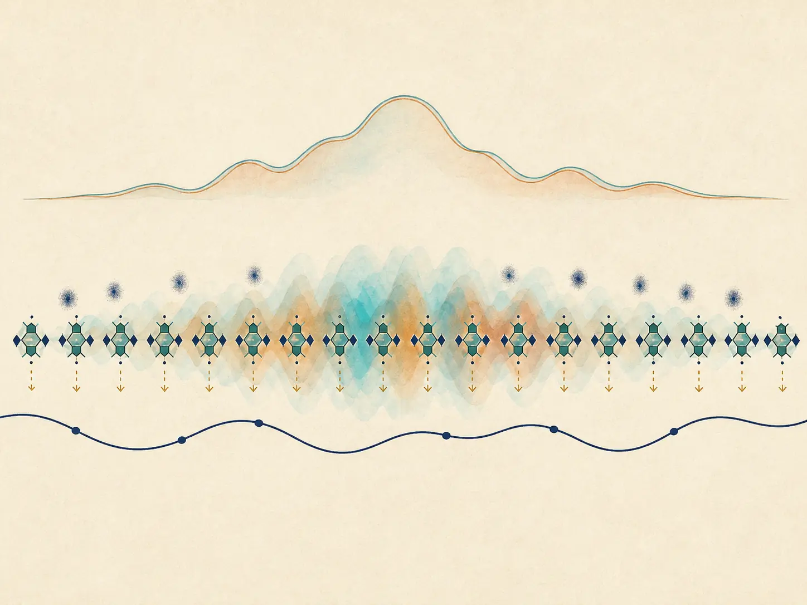
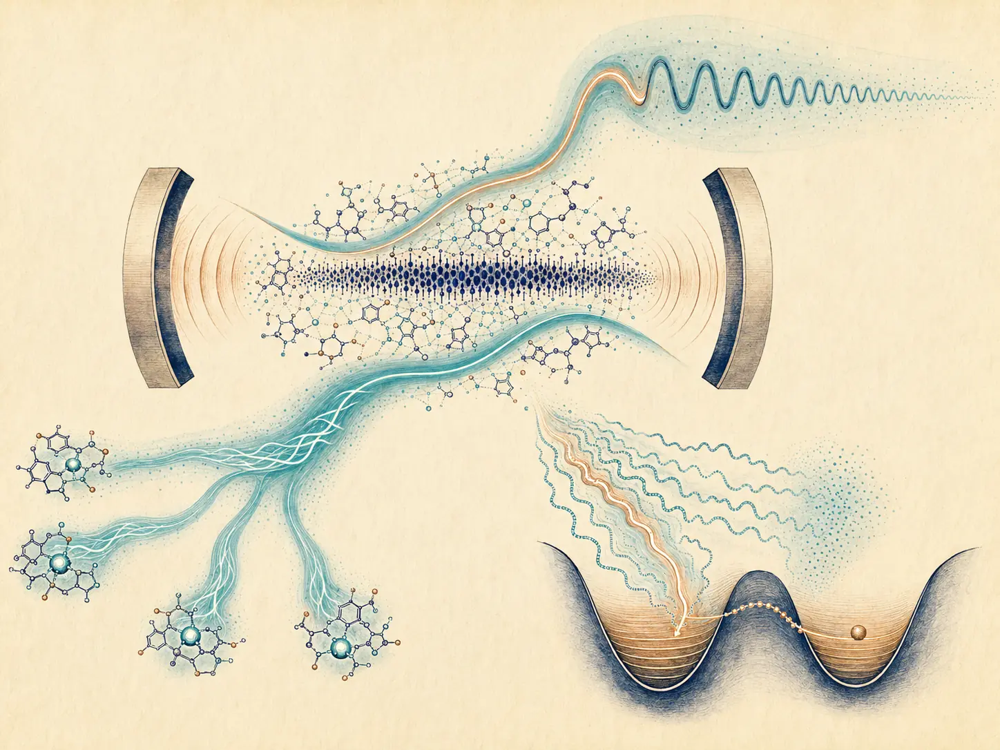
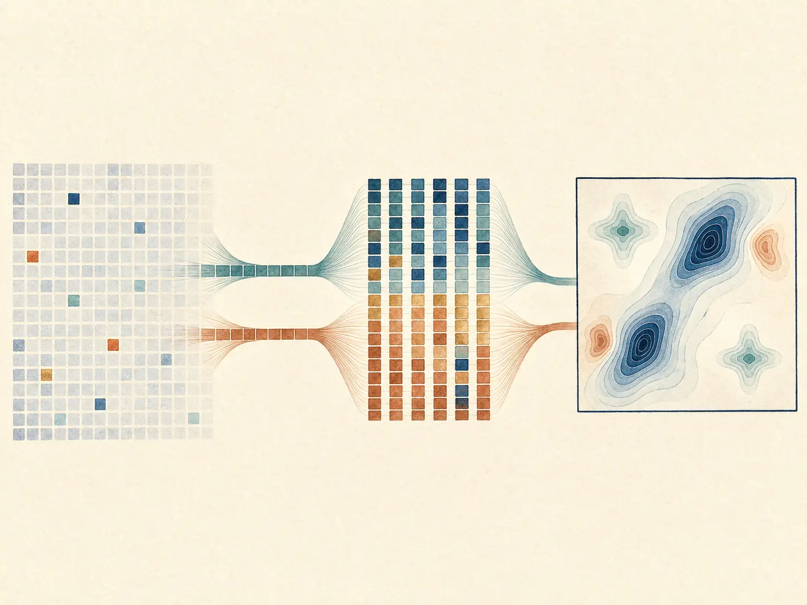
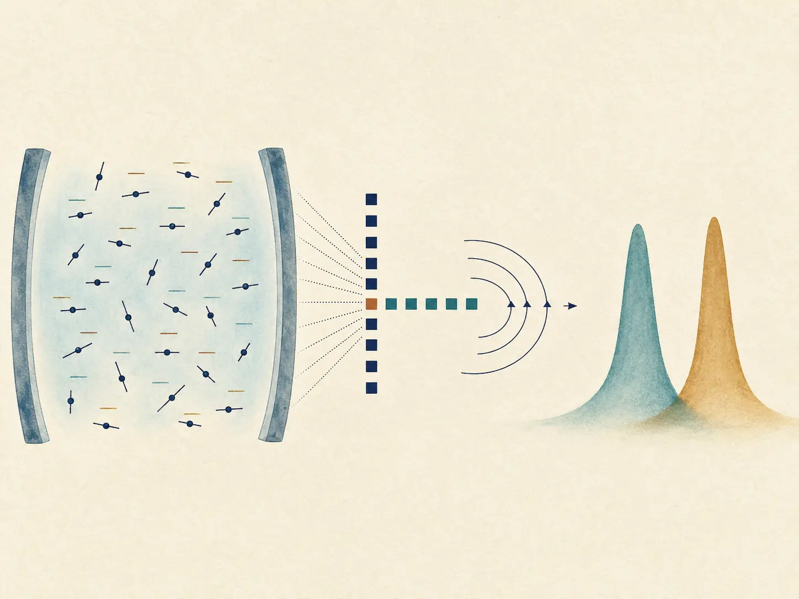
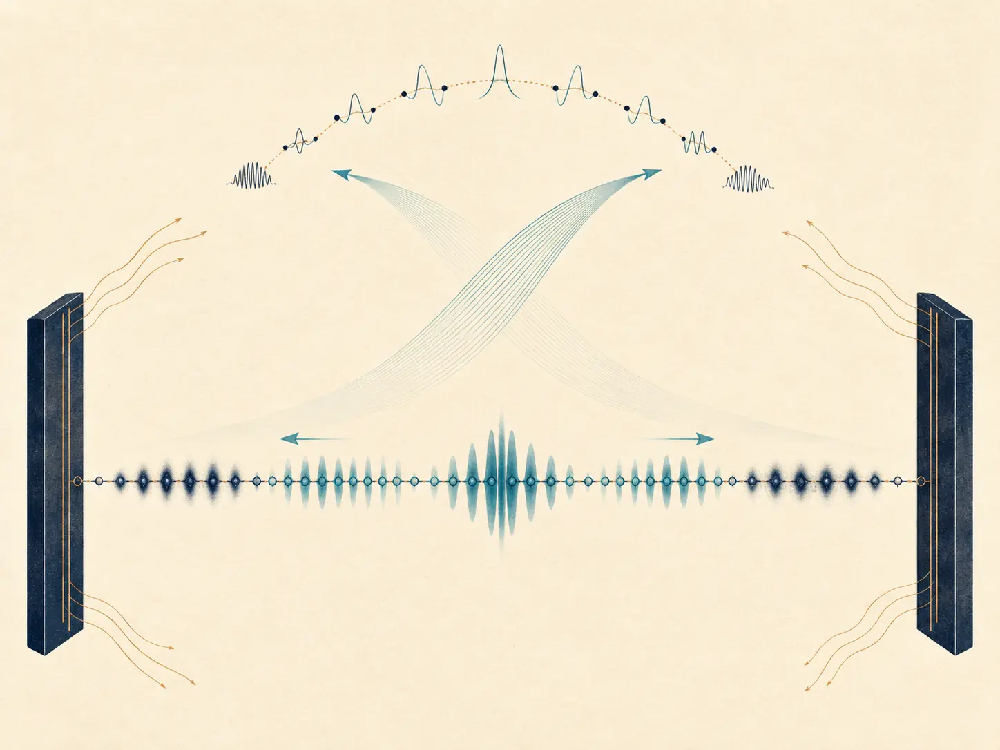
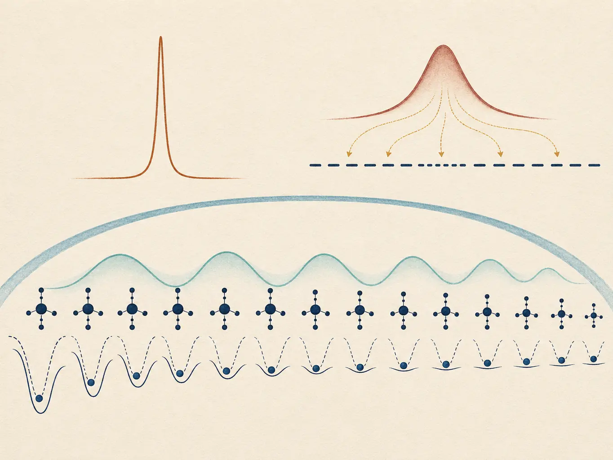
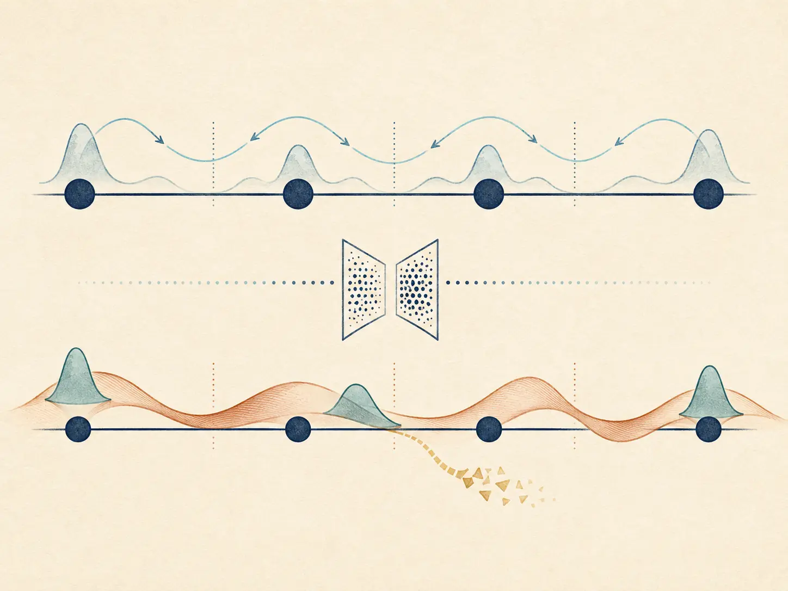
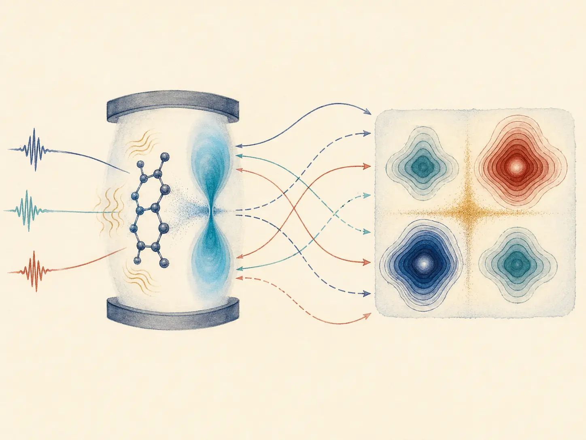

Research article · Nature Communications
Vibrational Strong Coupling in Cavity QED forms a Macroscopic Quantum State
Accepted in Nature Communications (2026)
Publications
Articles, reviews, and collaborative work spanning spectroscopy, transport, collective strong coupling, and nonadiabatic dynamics.
View on Google Scholar10 publications
Name highlighted in author lists
Each entry includes the original paper and PDF links, a detailed guide to the work, and a link to the general code repository.

Research article · Nature Communications
Accepted in Nature Communications (2026)

Research article · PNAS
PNAS 123, 17 (2026)

Research article · Nano Letters
Nano Letters 26, 18, 6055–6062 (2026)

Review · Annual Review of Physical Chemistry
Annual Review of Physical Chemistry 77, 201–224 (2026)

Research article · The Journal of Chemical Physics
J. Chem. Phys. 162 (7), 074110 (2025)

Research article · The Journal of Chemical Physics
J. Chem. Phys. 162, 014114 (2025)

Research article · Nano Letters
Nano Letters 25 (4), 1617–1622 (2025)

Research article · The Journal of Chemical Physics
J. Chem. Phys. 161, 064105 (2024)

Research article · Physical Review Letters
Phys. Rev. Lett. 132, 126903 (2024)

Research article · The Journal of Chemical Physics
J. Chem. Phys. 159, 094102 (2023)